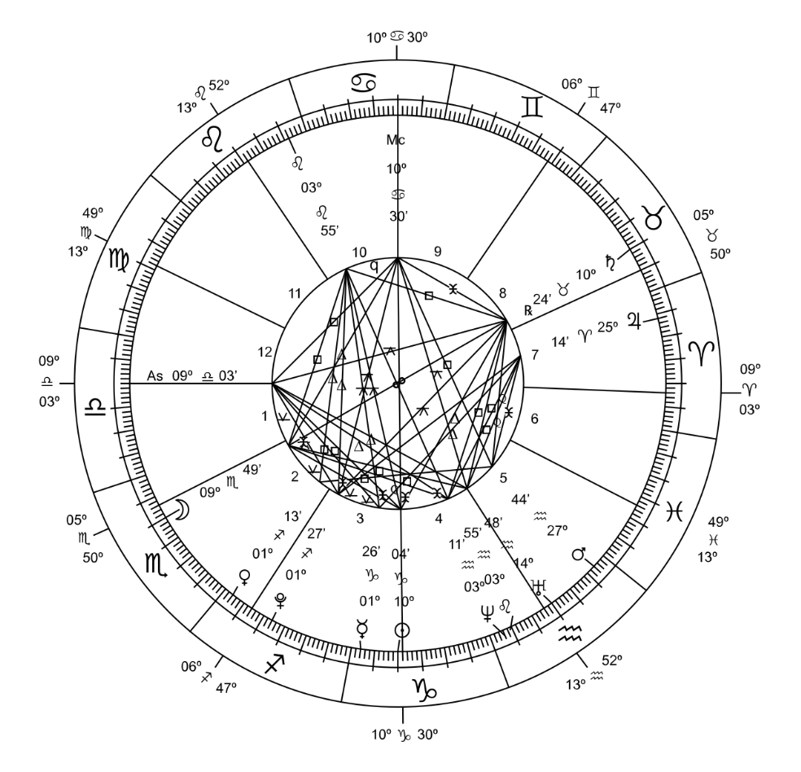
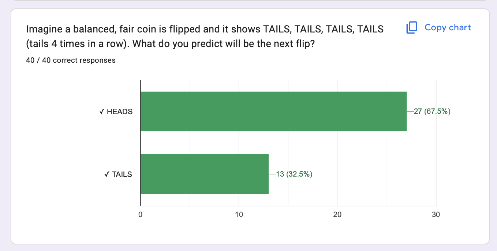
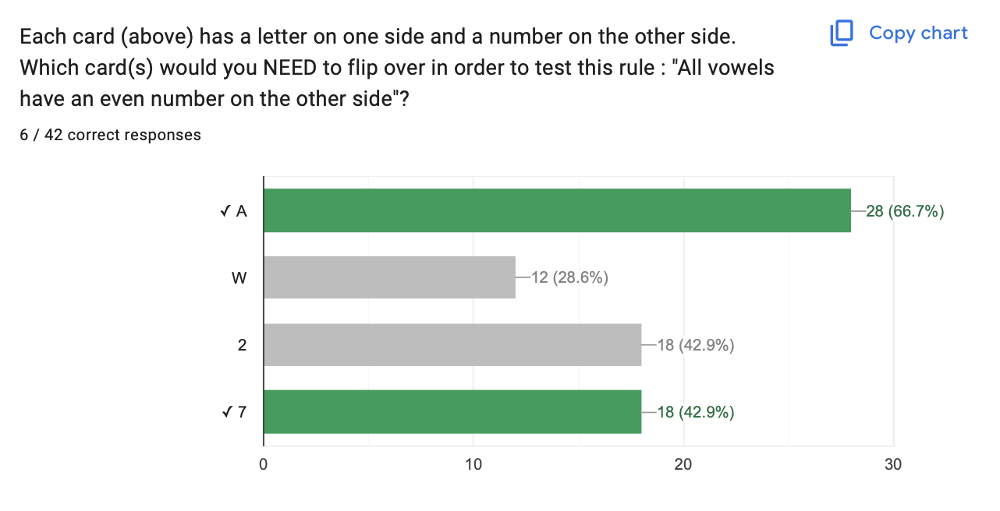
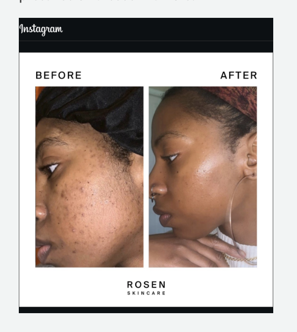
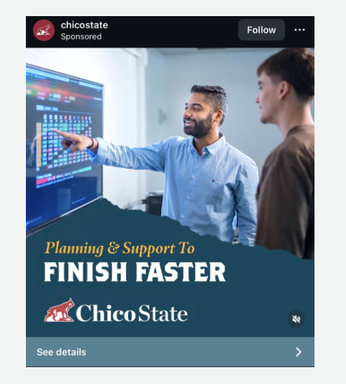
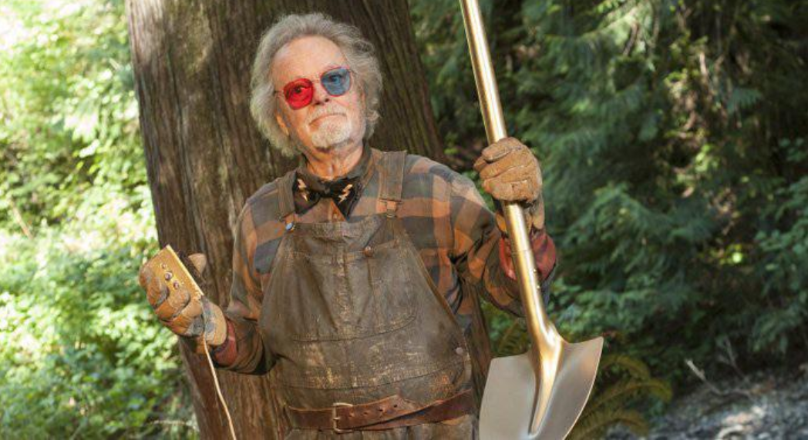

Week 2
Check-In Here : tinyurl.com/hibiases

Agenda and Announcements
Agenda :
- 10 Min : Welcome and Check-In
- 30 Min : Part 1 : Psychology as a Valid Science?
- 30 Min : Part 2 : Biased Knowledge
- 10 Min : Recap & Next Week
Announcements :
Blah. Let me know how access goes.
Office Hours in SSSC.
Today : Wednesday 12:35 - 2:30.
Starting Next Week : Wednesday 2:30 - 4:30.
Check-In Review
| Epistemology | Example Pro-Belief in Horoscopes | Example Anti-Belief in Horoscopes |
|---|---|---|
| Intuition | ||
| Authority | ||
| Rationalism | ||
| Empiricism |
Part 1 : Can Psychology Be a Valid Science?
RECAP : Goal of Science to Predict & Control
Research Questions : Writing Linear Models
Linear Model : an equation that simplifies our question & theory.
- DV ~ IV1 + IV2 + … + IVk + ERROR
- DV = what you want to predict or control (focus of your study)
- IV = all the varaiable(s) you think might help predict the DV.
- ERROR = life is complex! our predictions will be imperfect
Fiona : “…how creativity changes in our minds as we grow older.”
London : “As we age, why is it that we begin to naturally feel attracted to different aesthetic styles in our lives?”
Aracely : “how we interact with other people and how they influence us in different ways.”
Jake : “how different age groups use AI chatbots like ChatGPT.”
Research Questions : Hypotheses
Hypotheses : falsifiable predictions based on your theory.
H0 = null hypothesis = if the theory is NOT SUPPORTED, then I expect…
HA, = alternative hypothesis = if the theory is SUPPORTED, then I expect…
Fiona : “…how creativity changes in our minds as we grow older.”
London : “As we age, why is it that we begin to naturally feel attracted to different aesthetic styles in our lives?”
Aracely : “how we interact with other people and how they influence us in different ways.”
Jake : “how different age groups use AI chatbots like ChatGPT.”
ACTIVITY :
RESEARCH METHODS VISION BOARD.
Add your name, dream vacation, and write out your research question & theory (from D1).
Define the Null & Alternative Hypotheses.
DISCUSS : The Replication Crisis in Psychology
How did this make you feel? Why?
Why do you think so many students hadn’t heard about the replication crisis until this class?
What ideas or solutions do you think would work?
Does this change your perspective on psychology as positivist?
POSITIVISM : there is a REAL TRUTH about what makes people think, feel, and act that we can someday learn.
POST-POSITIVISM : reality exists, but we may not be able to ever understand REAL TRUTH because our ability to study reality will always be influenced by people.
What other questions do you have?
Part 2 : Cognitive Biases
DISCUSSION : Cognitive Biases
Patterns in Randomness
Positive Evidence
Previous Beliefs
Availability
Social Influence
Regression to the Mean


DISCUSSION : Cognitive Biases
Patterns in Randomness
Positive Evidence
Previous Beliefs
Availability
Social Influence
Regression to the Mean
For Each Bias - What’s a clear definition? How would you explain to a 5-year old? - What’s an example from real-life (e.g., a Casino) - How might this bias influence / be relevant to science?
ACTIVITY : Identifying Biases in Horoscopes
Find examples of each of the different cognitive biases: Patterns in Randomness, Positive Evidence, Previous Beliefs, Availability, Social Influence, Regression to the Mean.
ACTIVITY : Name…that…bias!!!
| zahra | jaxson |
|---|---|
 |
 |
NEXT WEEK : Science Business.
TOPIC DISCUSSION : DIG DEEPER

What’s a claim from psychology that you’ve heard (and believe?)
What are some of the biases that might motivate this belief?
How is scientific knowledge created and produced?
BYE.